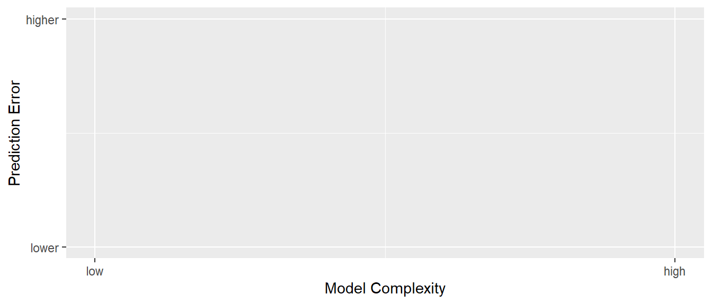
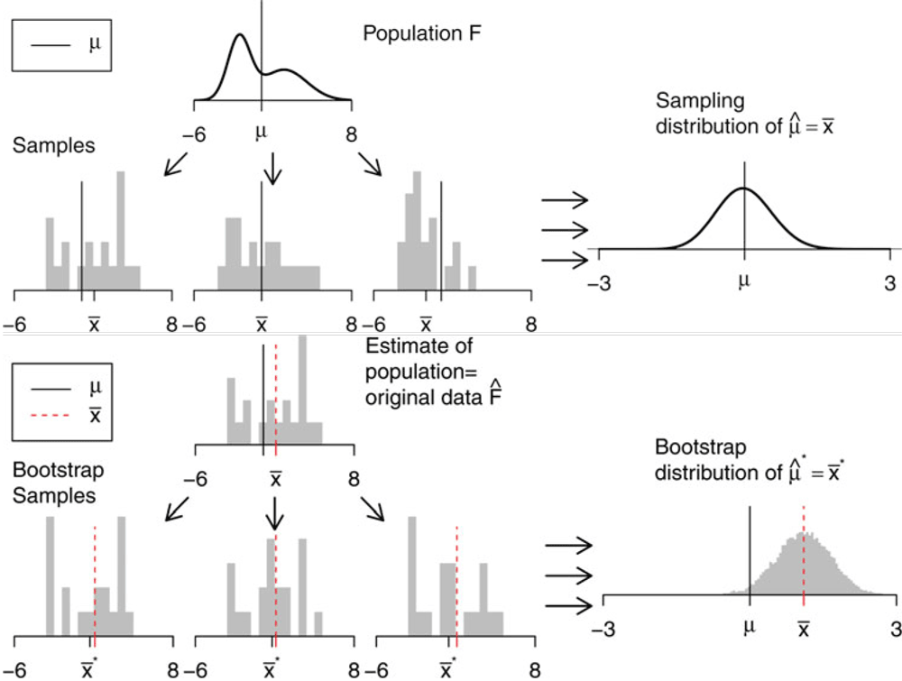

21 Vorhersagen bei der multiple linearen Regression
21.1 Multiple Regression und Polynome
21.2 Vorhersage versus Inferenz
21.3 Test error versus training error
- The test error is the average error that results from using a statistical learning method to predict the response on a new observation, one that was not used in training the method.
- The training error is the average error that results from applying the statistical learning method to the observations used in its training.
The training error rate often is quite different from the test error rate, and in particular the former can dramatically underestimate the latter.
21.4 Training- versus Test-Set Performance
21.5 Validation-set approach
- Randomly divide the available set of samples into two parts: a training set and a validation or hold-out set.
- The model is fit on the training set, and the fitted model is used to predict the responses for the observations in the validation set.
- The resulting validation-set error provides an estimate of the test error. This is typically assessed using MSE in the case of a quantitative response and misclassification rate in the case of a qualitative (discrete) response.
21.6 K-fold Cross-validation
- Estimates can be used to select best model, and to give an idea of the test error of the final chosen model.
- Randomly divide the data into K equal-sized parts. We leave out part \(k\), fit the model to the other \(K-1\) parts (combined), and then obtain predictions for the left-out \(k\)th part.
- This is done in turn for each part \(k = 1, 2, \ldots K\), and then the results are combined.
21.7 Implementation details
- Let the \(K\) parts be \(C_1, C_2, \ldots, C_K\) with \(n_k = n/K\) observations each
- Compute \[ CV_{(K)} = \sum_{i=1}^K \frac{n_k}{n}MSE_k \]
- Setting \(K = n\) yields leave-one out cross-validation (LOOCV)
21.8 Cross-validation for Classification problems
\[ CV_{(K)} = \sum_{i=1}^K \frac{n_k}{n}Err_k \]
\[ Err_k = \sum_{i\in C_k}I(y_i\neq \hat{y}_i)/n_k \]
21.9 Bootstrap
- Flexible statistical tool that can be used to quantify the uncertainty associated with a given estimator or statistical learning method.
- Primarily used to obtain standard errors of an estimate
- Application of the plug-in principle: To estimate a parameter, a quantity that describes the population, use the statistic that is the corresponding quantity for the sample.
21.10 Implementation
- Repeatedly sample with replacement \(n\) objects from the data
- Each bootstrap data set is the same size like the original data
21.11 Bootstrap

21.13 Bootstrap t-Interval (compare Hesterberg (2015))
- Calculate a bootstrap t-statistics \[ t^* = \frac{\hat{\theta}- \hat{\theta}}{SE^{*}} \]
- Calculate Confidence interval (attention reversed quantiles) \[ (\hat{\theta}-q_{1-\alpha/2}SE,\hat{\theta}-q_{\alpha/2}SE) \]
21.12 Comments